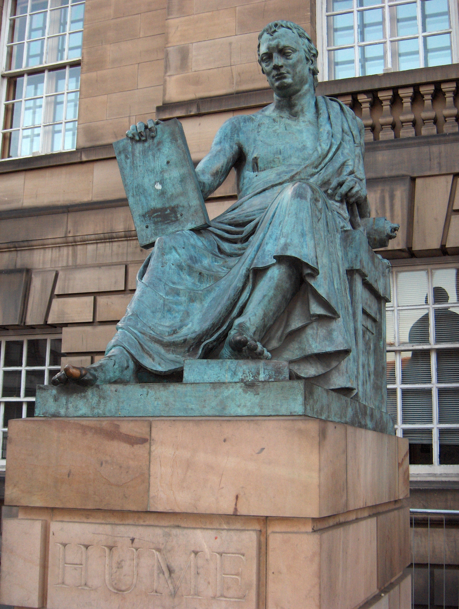

|
HOME
 Читая эти предсмертные строки Юма, он представляется нам сугубо симпатичным и весьма практичным человеком. Даже трудно представить, что о своей жизни говорит один из основателей (наряду с Джорджем Беркли) новой, фундаментальной философской системы - субъективного идеализма, в соответствии с которым, по поверхностному первому представлению, внешний мир без воспринимающего его человека вообще не существует. Странным образом где -то все же навнрное существовала та Англия, толстую историю которой Юм написал. (А.А.)Человеку, который долго говорит о себе, трудно избежать тщеславия; поэтому я буду краток. Можно усмотреть признак тщеславия уже в самом замысле — описать свою жизнь, но это описание будет содержать мало чего иного, кроме истории моих сочинений, ибо воистину почти вся моя жизнь была посвящена литературным трудам и занятиям. Первоначальный успех большей части моих сочинений вовсе не был таковым, чтобы возбудить во мне тщеславие. Я родился 26 апреля 1711 года по старому стилю в Эдинбурге. Как мой отец, так и моя мать принадлежали к добропорядочной фамилии. Семья отца составляет ветвь графов Хоум, или Юм, и мои предки в течение многих поколений владели тем поместьем, которое теперь принадлежит моему брату. Мать была дочерью сэра Дэйвида Фалконера, президента судейской коллегии; титул лорда Халкертона перешел по наследству к ее брату. Несмотря на это, моя семья не была богата, и так как я был младшим братом, то причитавшаяся мне доля наследства была, по обычаю моей страны, очень мала. Отец, считавшийся даровитым человеком, умер, когда я был еще ребенком, оставив меня вместе со старшим братом и сестрой на попечении нашей матери, женщины редких достоинств, которая, несмотря на свою молодость и красоту, всецело посвятила себя воспитанию и образованию своих детей. Я с успехом прошел элементарный курс наук и очень рано почувствовал влечение к литературе, которое было господствующей страстью моей жизни и главным источником моих наслаждений. Мои склонности к наукам, трудолюбие и серьезность внушили моей семье мысль, что мое призвание — адвокатура; но я чувствовал глубокое отвращение ко всякому другому занятию, кроме изучения философии и общеобразовательного чтения, и, в то время как мои родные думали, что я увлекаюсь Вётом и Виннием, втайне пожирал Вергилия и Цицерона. Однако скудость средств, совсем не соответствовавших этому плану жизни, и слабость здоровья, расстроенного чрезмерным прилежанием, заставили меня попытать счастье на другом, более практическом поприще. В 1734 году я приехал в Бристоль, будучи снабжен рекомендациями, адресованными к крупным коммерсантам, но спустя немного месяцев увидел, что совершенно непригоден для этого рода деятельности. Я отправился во Францию с целью продолжать свои занятия в провинциальном уединении и тогда же составил себе план жизни, который позже осуществлял неуклонно и с успехом. Я решил возмещать скудость моих средств самой строгой бережливостью, дабы оберегать мою независимость и не обращать внимания на что-либо, кроме усовершенствования моего литературного таланта. Во время пребывания во Франции (сначала в Реймсе, а потом главным образом в Ла-Флеше в Анжу) я написал «Трактат о человеческой природе». Проведя в этой стране три приятных года, я в 1737 году вернулся в Лондон. В конце 1738 года я издал свой «Трактат» и тотчас отправился к матери и брату, который жил в деревне и с большим благоразумием и успехом старался улучшить свое материальное положение. Едва ли чей-нибудь литературный дебют был менее удачен, чем мой «Трактат о человеческой природе». Он вышел из печати мертворожденным, не удостоившись даже чести возбудить ропот среди фанатиков. Но, отличаясь от природы веселым и жизнерадостным характером, я очень скоро оправился от этого удара и с большим усердием продолжал мои занятия в деревне. В 1742 году я напечатал в Эдинбурге первую часть моих «Опытов»; книга встретила радушный прием, который вскоре заставил меня совершенно забыть предшествовавшую неудачу. Я по-прежнему жил с матерью и братом в деревне и в течение этого времени упрочил свои познания в области греческого языка, которым я слишком пренебрегал в юности. В 1745 году я получил письмо от маркиза Аннандэля, приглашавшего меня приехать к нему в Англию; вместе с тем я узнал, что друзья и родственники молодого маркиза хотят поручить его моему попечению и руководству, так как состояние его духа и здоровья делало это необходимым. Я прожил с ним год. Жалованье, полученное мной за это время, значительно увеличило мое маленькое состояние. Вслед за тем я получил приглашение от генерала Сен - Клэра сопровождать его в звании секретаря в экспедиции, которая вначале замышлялась против Канады, но кончилась как набег на берега Франции. В следующем, т. е. 1747, году генерал, назначенный военным посланником в Вену и Турин, снова просил меня следовать за ним в прежнем звании. Я надел офицерский мундир и был представлен этим двум дворам в качестве адъютанта генерала, как и сэр Гарри Эрскин и капитан Грант, теперь генерал. За всю мою жизнь эти два года были почти единственным перерывом в моих занятиях; я провел их приятно и в хорошем обществе, а состояние мое благодаря значительному жалованью и бережливости увеличилось настолько, что я считал себя уже вполне обеспеченным, хотя мои друзья улыбались, когда я говорил это; словом, я имел тогда около тысячи фунтов. Я всегда думал, что неуспех моего «Трактата о человеческой природе» объясняется скорее его формой, нежели содержанием, и что я сделал очень обычную ошибку, слишком рано обратившись к печати. Поэтому я заново переделал первую часть этого сочинения в «Исследование о человеческом познании», вышедшее в свет во время моего пребывания в Турине. Но вначале указанный труд встретил не лучший прием, чем «Трактат о человеческой природе». Вернувшись из Италии, я мог с огорчением видеть, как вся Англия волнуется по поводу «Свободного исследования» д-ра Мидлтона, тогда как мое сочинение осталось незамеченным и было совершенно забыто. Такой же прием встретило и второе издание моих «Моральных и политических опытов», вышедшее в Лондоне. Но такова сила врожденного темперамента, что все эти неудачи оказали незначительное влияние или совсем не повлияли на меня. В 1749 году я вернулся к брату и провел с ним два года в деревне, потому что матери уже не было в живых. Там я написал вторую часть «Опытов», которую назвал «Политическими беседами», и «Исследование о принципах морали», составляющее переработку второй части «Трактата» . Между тем мой издатель Э. Миллар известил меня, что мои книги (все, за исключением злополучного «Трактата») начинают привлекать к себе внимание: о них говорят, их все более покупают и уже требуют новых изданий. В течение года появилось два-три ответа со стороны духовных лиц, подчас весьма высокопоставленных, и ругань д-ра Уорбёртона показала мне, что мои сочинения начинают ценить в хорошем обществе. Но я принял решение, которого позже неизменно придерживался, не отвечать ни на какие нападки и, не будучи вспыльчивым от природы, легко воздерживался от всякого рода литературных споров. Эти симптомы нарождающейся известности вселили в меня бодрость, ибо я всегда был склонен видеть скорее приятную, чем неприятную, сторону вещей, что является способностью, которая может сделать человека счастливым вернее, чем обладание с самого дня рождения ежегодным доходом в десять тысяч фунтов. В 1751 году я переселился из деревни в город, настоящую арену деятельности всякого литератора. В 1752 году в Эдинбурге, где я жил тогда, вышли «Политические беседы» — единственное из моих произведений, имевшее успех с момента публикации: оно было хорошо принято и за границей, и на родине. В том же году в Лондоне вышло «Исследование о принципах морали», по моему мнению (хотя мне не следовало бы выступать судьей в этом деле) лучшее из всех моих сочинений исторических, философских или литературных. Оно не было замечено. В 1752 году Общество юристов избрало меня своим библиотекарем ; указанная должность не приносила мне почти никаких доходов, но давала возможность пользоваться обширной библиотекой. В это время я принял решение написать «Историю Англии», но, не чувствуя в себе достаточно мужества для изображения исторического периода продолжительностью в семнадцать веков, начал с воцарения дома Стюартов, ибо мне казалось, что именно с этой эпохи дух партий наиболее исказил освещение исторических фактов. Признаюсь, я был почти уверен в успехе данного сочинения. Мне казалось, что я буду единственным историком, презревшим одновременно власть, выгоду, авторитет и голос народных предрассудков; и, так как предмет был общедоступен, я ожидал соответствующего одобрения. Но какое ужасное разочарование! Я был встречен криком неудовольствия, негодования, почти ненависти: англичане, шотландцы и ирландцы, виги и тори, церковники и сектанты, свободомыслящие и ханжи, патриоты и придворные — все соединились в порыве ярости против человека, который осмелился великодушно оплакать судьбу Карла I и графа Страффорда; и, что обиднее всего, после первой вспышки бешенства книга была, казалось, совсем забыта. Г-н Миллар говорил мне, что он продал в течение года не более сорока пяти экземпляров. Действительно, во всех трех королевствах едва ли был хоть один человек, пользовавшийся некоторой известностью в обществе или литературной славой, который относился бы к моей книге снисходительно. Я должен, впрочем, указать на примаса Англии д-ра Герринга и примаса Ирландии д-ра Стоуна как на два любопытных исключения: эти почтенные прелаты прислали мне по ободряющему письму. Между тем, признаюсь, я был обескуражен; если бы не война, вспыхнувшая в то время между Англией и Францией, я, вероятно, удалился бы в один из провинциальных городов последней, переменил имя и никогда не возвратился на свою родину. Но так как такой план был тогда неисполним и второй том уже значительно подвинулся вперед, то я решил крепиться и продолжать. Между тем я издал в Лондоне «Естественную историю религии» вместе с некоторыми другими небольшими статьями; она прошла незамеченной, если не считать памфлета, которым ответил мне д-р Херд, невежественно раздраженного, высокомерного и оскорбительно грубого, каковые [качества вообще] отличают школу Уорбёртона. Этот памфлет на фоне общего равнодушия, которым была встречена эта книга, несколько утешил меня. В 1756 году, через два года после провала первого тома, вышел в свет второй том моей «Истории», охватывающий период от смерти Карла I до Революции. Этот том возбудил в вигах менее неудовольствия и был лучше принят; он не только разошелся сам, но и помог пробиться своему несчастному брату. Однако, хотя опыт показал мне, что в руках вигов находится власть распределять все места как в государстве, так и в литературе, я был так мало расположен уступать их неразумным требованиям, что почти все изменения числом около ста, которые чтение, размышление и новые исследования заставили меня внести в историю первых двух Стюартов, благоприятны для торийской партии. Смешно рассматривать английскую конституцию до этого периода как последовательное воплощение свободы. В 1759 году я издал мою «Историю дома Тюдоров». Это сочинение вызвало против себя почти такую же бурю, как и «История» первых двух Стюартов. Особенно были недовольны изображением царствования Елизаветы. Однако на этот раз я был неуязвим для яростных нападок публики и продолжал мирно и с удовлетворением работать в своем уединении в Эдинбурге над последними двумя томами первой части «Истории Англии»; я издал их в 1761 году с более или менее удовлетворительным успехом. Но как ни была подвержена прихотям погоды судьба моих сочинений, они имели такой успех, что плата за каждый экземпляр, которую я получал от издателей, далеко превосходила обычный до того в Англии размер вознаграждения; я сделался не только обеспеченным, но и богатым человеком. Я вернулся на родину, в Шотландию, с твердым намерением более не покидать ее и приятным сознанием того, что ни разу не прибегал к помощи сильных мира сего и даже не искал их дружбы. Так как мне было уже за пятьдесят, то я надеялся сохранить эту философскую свободу до конца жизни. Но в 1763 году я получил от незнакомого мне графа Хертфорда, назначенного послом в Париж, приглашение последовать за ним туда, с тем чтобы в скором времени получить пост секретаря посольства, а до тех пор исполнять обязанности последнего. Как ни заманчиво было это предложение, вначале я отклонил его отчасти из нежелания завязывать сношения с вельможами, отчасти из страха, что утонченные манеры и веселый образ жизни парижского общества уже не придутся по вкусу человеку моих лет и наклонностей; но, когда граф повторил свое предложение, я дал согласие. Исходя из полученных мной удовольствия и материальной выгоды, я имею все основания считать счастливыми свои отношения с этим благородным человеком, а позже с его братом генералом Конвэй. Тот, кто не знает силы моды и разнообразия ее проявлений, едва ли может представить себе прием, оказанный мне в Париже мужчинами и женщинами всякого звания и положения. Чем более я уклонялся от их чрезмерных любезностей, тем более последние сыпались на меня. Как бы то ни было, жизнь в Париже представляет истинное наслаждение благодаря большому количеству умных, образованных и вежливых людей, какими этот город изобилует больше, чем какое бы то ни было другое место в мире. Я подумывал даже как-то поселиться здесь на всю жизнь. Меня назначили секретарем посольства; летом 1765 года я расстался с лордом Хертфордом, который получил пост лорда-лейтенанта Ирландии. Я исполнял обязанности chargé d'affaires до конца года, когда прибыл герцог Ричмондский. В начале 1766 года я покинул Париж, а летом отправился в Эдинбург, чтобы там по-прежнему замкнуться в моем философском уединении. Благодаря дружбе лорда Хертфорда я вернулся в этот город хотя и не богатым, но все же с гораздо большим количеством денег и более значительным доходом, чем оставил его. Я хотел посмотреть, на что похожа жизнь в изобилии, подобно тому как раньше я смотрел, на что похожа жизнь в достатке. В 1767 году м-р Конвэй просил меня принять пост помощника государственного секретаря; личные свойства генерала и мои отношения к лорду Хертфорду не позволили мне отказаться от этого предложения. В 1769 году я вернулся в Эдинбург весьма богатым (я обладал годовым доходом в 1000 фунтов), здоровым и хотя несколько обремененным годами, но надеющимся еще долго наслаждаться покоем и быть свидетелем распространения своей известности. Весной 1775 года у меня обнаружились признаки внутренней болезни, которая вначале не внушала мне никаких опасений, но с тех пор сделалась, кажется, неизлечимой и смертельной. Теперь я жду скорой кончины. Я очень мало страдал от своей болезни, и, что еще любопытнее, несмотря на сильное истощение организма, мое душевное равновесие ни на минуту не покидало меня, так что если бы мне надо было назвать какую-нибудь пору моей жизни, которую я хотел бы пережить снова, то я указал бы на последнюю. Я сохранил ту же страсть к науке, ту же живость в обществе, как и прежде. Впрочем, я думаю, что человек 65 лет, умирая, не теряет ничего, кроме нескольких лет недомогания; и, хотя, судя по многим признакам, приближается время нового и более яркого расцвета моей литературной известности, я знаю, что мог бы наслаждаться им лишь немного лет. Трудно быть менее привязанным к жизни, чем я теперь. Чтобы покончить с изображением моего характера, скажу еще, что я. отличаюсь или, вернее, отличался (ибо, говоря о самом себе, я должен употреблять теперь прошедшее время, что побуждает меня еще более смело высказывать свое мнение), повторяю, отличался кротостью натуры, самообладанием, открытым, общительным и веселым нравом, способностью привязываться, неумением питать вражду и большой умеренностью во всех страстях. Даже любовь к литературной славе — моя господствующая страсть — никогда не ожесточала моего характера, несмотря на частые неудачи. Мое общество было приятно как молодым и беззаботным людям, так и ученым и литераторам; и, находя особенное удовольствие в обществе скромных женщин, я не имел основания быть недовольным приемом, который встречал с их стороны. Словом, в противоположность тому, как это бывает с большинством выдающихся людей, которые пользуются некоторой известностью, жало клеветы никогда не касалось меня, и, хотя я сам необдуманно навлекал на себя бешеные нападки политических и религиозных партий, они как бы сдерживали в отношениях со мной свою обычную ярость. Мои друзья никогда не имели случая защищать от нападок какую-нибудь черту моего характера или поведения: не то чтобы ханжам ни разу не посчастливилось придумать и распространить обо мне какую-нибудь клевету, но они не придумали ни одной, которая им самим казалась бы правдоподобной. Я не могу отрицать тщеславия в мысли посвятить самому себе надгробное слово, но надеюсь, что оно не будет неуместно,— и это было бы легко доказать с помощью фактов. 18 апреля 1776 года
|